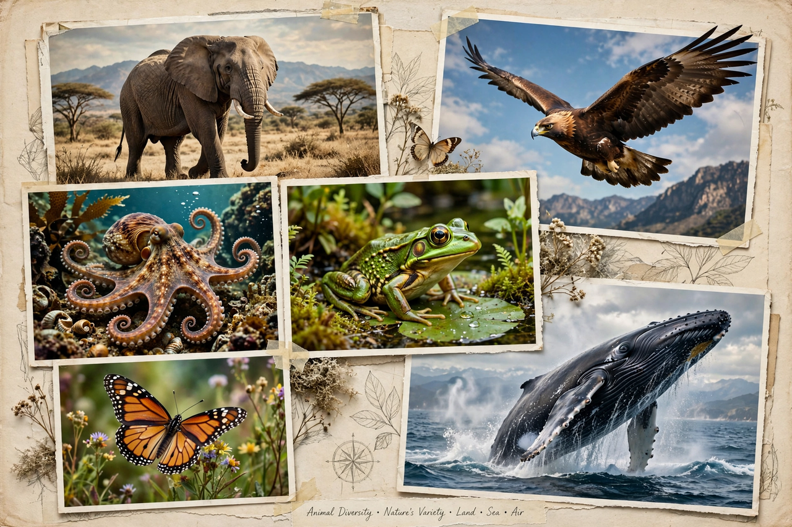

Animal
| Kingdom | Animalia |
|---|---|
| Described species | over 1.5 million |
| Largest group | Arthropods (esp. insects) |
| Origin | over 600 million years ago |

[Image: a collage of animals — elephant, eagle, octopus, frog, butterfly and whale — showing animal diversity]Animals are multicellular, eukaryotic organisms of the biological kingdom Animalia. With few exceptions, animals consume organic material, breathe oxygen, have muscle cells and myocytes, are able to move, can reproduce sexually, and grow from a hollow sphere of cells, the blastula, during embryonic development. Over 1.5 million living animal species have been described, and total estimates run to several million more.
Animals range in size from microscopic rotifers and the tiny parasitic wasps to the blue whale, the largest animal known ever to have lived. They occupy nearly every habitat on Earth and form the animal component of almost all ecosystems.
Classification
Most living animal species belong to the Bilateria — animals with bilaterally symmetrical bodies — and within them, to groups such as the arthropods (insects, spiders, crustaceans), molluscs, chordates (including all vertebrates), annelids, cnidarians (jellyfish and corals) and echinoderms (starfish and sea urchins). Sponges, cnidarians and comb jellies diverged earlier and lack true bilateral symmetry.
Insects are by far the most diverse animal group, with over a million described species; vertebrates, though most familiar, make up only a small percentage of animal species.
Characteristics and evolution
Animals are heterotrophs, obtaining energy by eating other organisms or organic matter. Their cells lack the rigid cell walls of plants and fungi, and most animals have nervous systems and muscles enabling movement in response to their surroundings — a defining adaptation for predation, escape and mate-finding.
Animals evolved in the oceans of the late Precambrian, over 600 million years ago, and diversified explosively in the Cambrian (from about 539 million years ago). They subsequently colonised land and air, and today their biomass and diversity are under severe pressure from human activity — a crisis central to modern Ecology and conservation biology.